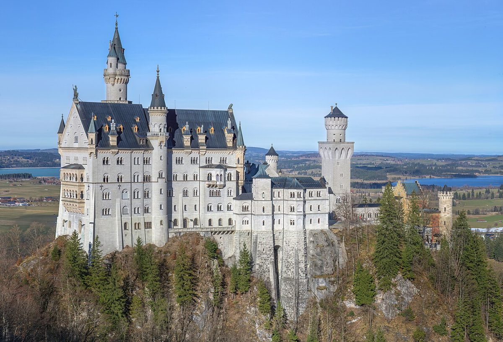

Discover the Magic of Neuschwanstein Castle: A Complete Travel Guide

Nestled in the heart of Bavaria, Neuschwanstein Castle is a dreamlike destination that seems to have leaped straight out of a fairy tale. This iconic castle, perched atop a rugged hill, has inspired countless stories and even served as the inspiration for Disney's Sleeping Beauty Castle. Whether you're a history buff, a nature lover, or simply seeking a magical escape, Neuschwanstein is a must-visit destination. Here's everything you need to know to plan your unforgettable trip.
Getting There
Neuschwanstein Castle is located near the town of Füssen in southern Germany. If you're traveling from Munich, the easiest way to reach the castle is by train. The journey takes around two hours, and the scenic ride through the Bavarian countryside is a treat in itself. From Füssen, you can take a short bus ride or taxi to the castle. For those driving, there’s ample parking available near the base of the hill.
Best Time to Visit
The castle is stunning year-round, but each season offers a unique experience. Spring and summer bring lush greenery and pleasant weather, making it ideal for outdoor exploration. Autumn transforms the surrounding forests into a golden wonderland, while winter blankets the castle in snow, creating a magical, storybook scene. To avoid crowds, consider visiting early in the morning or during the shoulder seasons.
Highlights of Neuschwanstein
1. The Castle Tour: Explore the opulent interior of Neuschwanstein, adorned with intricate murals, grand halls, and lavish decorations. Each room tells a story of King Ludwig II's vision and passion for art and architecture.
2. Marienbrücke (Mary’s Bridge): Just a short hike from the castle, this suspension bridge offers breathtaking views of Neuschwanstein and the surrounding landscape. It’s the perfect spot for photos.
3. Hohenschwangau Castle: Located nearby, this yellow castle was King Ludwig II’s childhood home. Its charming interiors and fascinating history make it a great addition to your visit.
4. The Alpsee Lake: A serene lake near Hohenschwangau, perfect for a leisurely stroll or a peaceful moment amidst nature.
Where to Eat
After exploring the castle, indulge in some traditional Bavarian cuisine. Nearby restaurants and cafes offer hearty dishes like schnitzel, pretzels, and dumplings. Don’t forget to try a slice of Apfelstrudel (apple strudel) or a stein of local beer for an authentic taste of Bavaria. If you’re packing a picnic, the scenic areas around the castle and lake are perfect for a relaxing meal with a view.
Insider Tips
- Wear comfortable shoes, as there’s a fair amount of walking and hiking involved, especially if you plan to visit Marienbrücke.
- Bring a camera to capture the stunning views and intricate details of the castle.
- Check the weather forecast and dress accordingly, especially if you’re visiting in winter or planning to hike.
Neuschwanstein Castle is more than just a tourist attraction; it’s a journey into a world of fantasy and history. With proper planning, your visit will be as enchanting as the castle itself. So pack your bags, prepare your camera, and get ready to experience the magic of Neuschwanstein!
Haiktec
- Bavarian Alps & Hidden Gems: A Solo Female Traveler's Guide to Safe & Enchanting Adventures
- Ultimate Wedding Budget & Vendor Tracker
- Smart Savings for Busy Families: 7 Easy Steps to Stretch Your Budget Without Sacrifice
Text mit KI erstellt und automatisch geprueft.